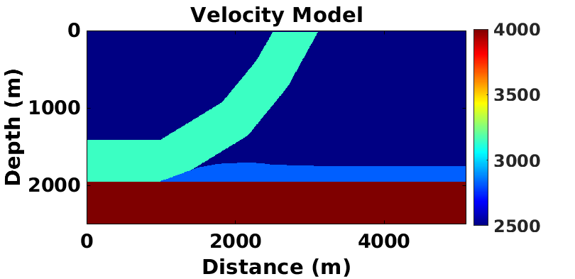
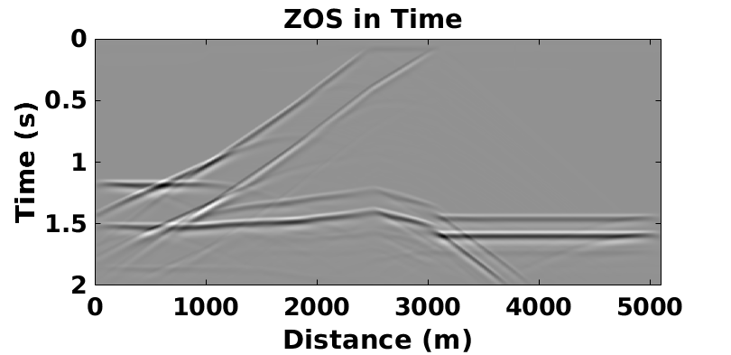
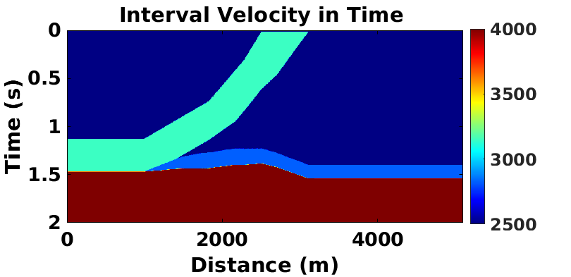
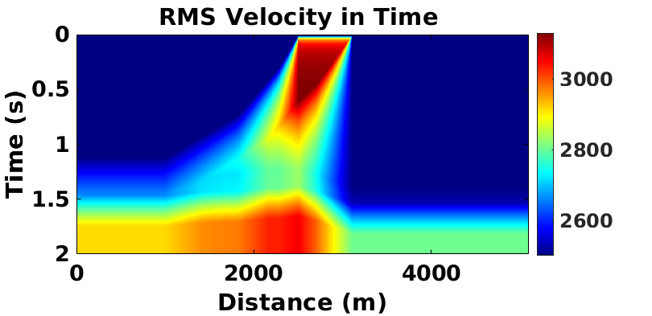
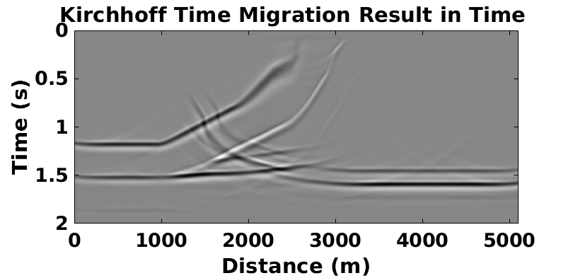
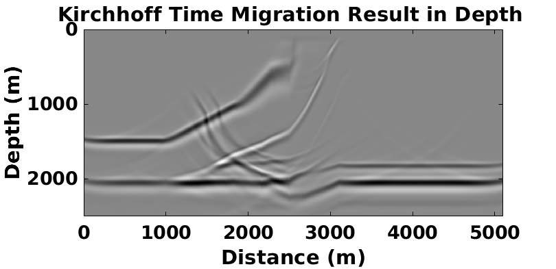
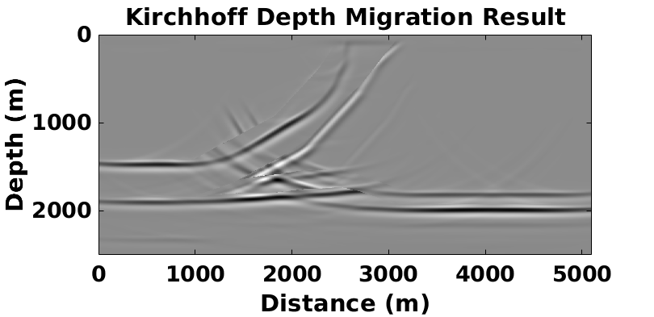
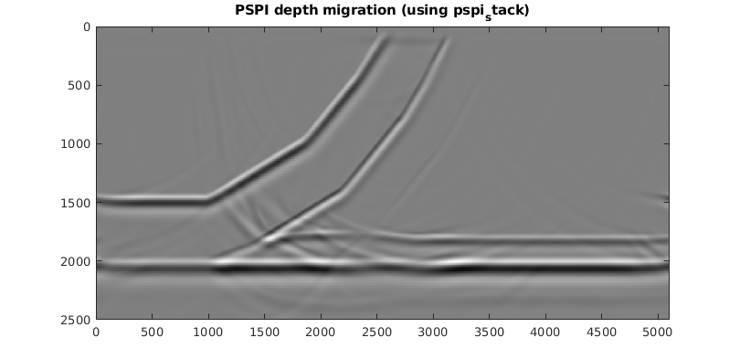

Contents
clear
close all
dt=0.002;
tmax=2;
t=0:dt:tmax;
dtstep=.001;
dx=5;
dz=5;
velmodel=1
if (velmodel==1)
[vel,xvel,zvel]=thrustmodel(dx);
elseif (velmodel==2)
[vel,xvel,zvel]=channelmodel(dx);
elseif (velmodel==3)
[vel,xvel,zvel]=wedgemodel(dx);
elseif (velmodel==4)
[vel,xvel,zvel]=flatmodel(dx);
elseif (velmodel==5)
[vel,xvel,zvel]=synclinemodel(dx);
end
figure;
imagesc(xvel,zvel,vel);
title('Velocity Model');
xlabel('Distance (m)');
ylabel('Depth (m)');
colorbar;
colormap('jet');
prepfig;
set(gcf,'position',[100 100 800 400]);
velmodel =
1

xrec=0:dx:(size(vel,2)-1)*dx;
z=0:dx:(size(vel,1)-1)*dx;
zrec=zeros(size(xrec));
filt=[5 10 40 50];
laplacian=2;
boundary=2;
phase=0;
fdom=10;
[w,tw]=wavemin(dt,fdom,tmax);
[seismogram,seis,t]=afd_explode(dx,dtstep,dt,tmax,vel,xrec,zrec,w,tw,laplacian,boundary);
figure;
imagesc(xrec,t,seismogram);
title('ZOS in Time ');
xlabel('Distance (m)');
ylabel('Time (s)');
colormap('gray');
prepfig;
set(gcf,'position',[100 100 800 400]);
There are 2000 steps to complete
wavefield propagated to 0.081 s; computation time left 28.3174 s
wavefield propagated to 0.162 s; computation time left 25.5101 s
wavefield propagated to 0.243 s; computation time left 23.6726 s
wavefield propagated to 0.324 s; computation time left 22.2483 s
wavefield propagated to 0.405 s; computation time left 20.9645 s
wavefield propagated to 0.486 s; computation time left 19.8813 s
wavefield propagated to 0.567 s; computation time left 18.787 s
wavefield propagated to 0.648 s; computation time left 17.671 s
wavefield propagated to 0.729 s; computation time left 16.5418 s
wavefield propagated to 0.81 s; computation time left 15.5175 s
wavefield propagated to 0.891 s; computation time left 14.4863 s
wavefield propagated to 0.972 s; computation time left 13.4378 s
wavefield propagated to 1.053 s; computation time left 12.3935 s
wavefield propagated to 1.134 s; computation time left 11.3361 s
wavefield propagated to 1.215 s; computation time left 10.2465 s
wavefield propagated to 1.296 s; computation time left 9.1642 s
wavefield propagated to 1.377 s; computation time left 8.0956 s
wavefield propagated to 1.458 s; computation time left 7.0355 s
wavefield propagated to 1.539 s; computation time left 5.9755 s
wavefield propagated to 1.62 s; computation time left 4.9193 s
wavefield propagated to 1.701 s; computation time left 3.866 s
wavefield propagated to 1.782 s; computation time left 2.8178 s
wavefield propagated to 1.863 s; computation time left 1.7704 s
wavefield propagated to 1.944 s; computation time left 0.72398 s
modelling completed
resampling
applying wavelet
Elapsed time is 29.393736 seconds.

[vrms,tv,vint]=vz2vrms(vel,z,t(2)-t(1),max(t));
figure;
imagesc(xrec,tv,vint);
title('Interval Velocity in Time ');
xlabel('Distance (m)');
ylabel('Time (s)');
colorbar;
colormap('jet');
prepfig;
set(gcf,'position',[100 100 800 400]);
figure;
imagesc(xrec,tv,vrms);
title('RMS Velocity in Time ');
xlabel('Distance (m)');
ylabel('Time (s)');
colorbar;
colormap('jet');
prepfig;
set(gcf,'position',[100 100 800 400]);
Hang on, almost done!
 
Kirchhoff Time Migration
params=nan*ones(1,12);
[seismig,tmig,xmig]=kirk_mig(seismogram,vrms,t,xrec,params);
figure;
imagesc(xmig,tmig,seismig);
title('Kirchhoff Time Migration Result in Time ');
xlabel('Distance (m)');
ylabel('Time (s)');
colormap('gray');
prepfig;
set(gcf,'position',[100 100 800 400]);
--- Total number of traces to be migrated : 1021 ---
Migrated trace no.20 of 1021, The input traces in aperture : 581
Estimated time remaining 89 seconds
Migrated trace no.40 of 1021, The input traces in aperture : 601
Estimated time remaining 100 seconds
Migrated trace no.60 of 1021, The input traces in aperture : 621
Estimated time remaining 97 seconds
Migrated trace no.80 of 1021, The input traces in aperture : 641
Estimated time remaining 94 seconds
Migrated trace no.100 of 1021, The input traces in aperture : 661
Estimated time remaining 94 seconds
Migrated trace no.120 of 1021, The input traces in aperture : 681
Estimated time remaining 92 seconds
Migrated trace no.140 of 1021, The input traces in aperture : 701
Estimated time remaining 92 seconds
Migrated trace no.160 of 1021, The input traces in aperture : 721
Estimated time remaining 90 seconds
Migrated trace no.180 of 1021, The input traces in aperture : 741
Estimated time remaining 89 seconds
Migrated trace no.200 of 1021, The input traces in aperture : 761
Estimated time remaining 88 seconds
Migrated trace no.220 of 1021, The input traces in aperture : 781
Estimated time remaining 86 seconds
Migrated trace no.240 of 1021, The input traces in aperture : 801
Estimated time remaining 85 seconds
Migrated trace no.260 of 1021, The input traces in aperture : 821
Estimated time remaining 84 seconds
Migrated trace no.280 of 1021, The input traces in aperture : 841
Estimated time remaining 83 seconds
Migrated trace no.300 of 1021, The input traces in aperture : 861
Estimated time remaining 82 seconds
Migrated trace no.320 of 1021, The input traces in aperture : 881
Estimated time remaining 83 seconds
Migrated trace no.340 of 1021, The input traces in aperture : 901
Estimated time remaining 82 seconds
Migrated trace no.360 of 1021, The input traces in aperture : 921
Estimated time remaining 81 seconds
Migrated trace no.380 of 1021, The input traces in aperture : 941
Estimated time remaining 79 seconds
Migrated trace no.400 of 1021, The input traces in aperture : 961
Estimated time remaining 78 seconds
Migrated trace no.420 of 1021, The input traces in aperture : 981
Estimated time remaining 77 seconds
Migrated trace no.440 of 1021, The input traces in aperture : 1001
Estimated time remaining 75 seconds
Migrated trace no.460 of 1021, The input traces in aperture : 1021
Estimated time remaining 73 seconds
Migrated trace no.480 of 1021, The input traces in aperture : 1021
Estimated time remaining 71 seconds
Migrated trace no.500 of 1021, The input traces in aperture : 1021
Estimated time remaining 69 seconds
Migrated trace no.520 of 1021, The input traces in aperture : 1021
Estimated time remaining 67 seconds
Migrated trace no.540 of 1021, The input traces in aperture : 1021
Estimated time remaining 65 seconds
Migrated trace no.560 of 1021, The input traces in aperture : 1021
Estimated time remaining 63 seconds
Migrated trace no.580 of 1021, The input traces in aperture : 1003
Estimated time remaining 61 seconds
Migrated trace no.600 of 1021, The input traces in aperture : 983
Estimated time remaining 58 seconds
Migrated trace no.620 of 1021, The input traces in aperture : 963
Estimated time remaining 56 seconds
Migrated trace no.640 of 1021, The input traces in aperture : 943
Estimated time remaining 53 seconds
Migrated trace no.660 of 1021, The input traces in aperture : 923
Estimated time remaining 50 seconds
Migrated trace no.680 of 1021, The input traces in aperture : 903
Estimated time remaining 48 seconds
Migrated trace no.700 of 1021, The input traces in aperture : 883
Estimated time remaining 45 seconds
Migrated trace no.720 of 1021, The input traces in aperture : 863
Estimated time remaining 42 seconds
Migrated trace no.740 of 1021, The input traces in aperture : 843
Estimated time remaining 39 seconds
Migrated trace no.760 of 1021, The input traces in aperture : 823
Estimated time remaining 36 seconds
Migrated trace no.780 of 1021, The input traces in aperture : 803
Estimated time remaining 34 seconds
Migrated trace no.800 of 1021, The input traces in aperture : 783
Estimated time remaining 31 seconds
Migrated trace no.820 of 1021, The input traces in aperture : 763
Estimated time remaining 28 seconds
Migrated trace no.840 of 1021, The input traces in aperture : 743
Estimated time remaining 25 seconds
Migrated trace no.860 of 1021, The input traces in aperture : 723
Estimated time remaining 22 seconds
Migrated trace no.880 of 1021, The input traces in aperture : 703
Estimated time remaining 20 seconds
Migrated trace no.900 of 1021, The input traces in aperture : 683
Estimated time remaining 17 seconds
Migrated trace no.920 of 1021, The input traces in aperture : 663
Estimated time remaining 14 seconds
Migrated trace no.940 of 1021, The input traces in aperture : 643
Estimated time remaining 11 seconds
Migrated trace no.960 of 1021, The input traces in aperture : 623
Estimated time remaining 8 seconds
Migrated trace no.980 of 1021, The input traces in aperture : 603
Estimated time remaining 6 seconds
Migrated trace no.1000 of 1021, The input traces in aperture : 583
Estimated time remaining 3 seconds
Migrated trace no.1020 of 1021, The input traces in aperture : 563
Estimated time remaining 0 seconds
migration completed in 137 seconds

[seismigz,z1]=stretch(seismig,tmig,vel,z,dx,1);
n=find(z1==2500);
figure;
imagesc(xmig,z1(1:n),seismigz(1:n,:));
title('Kirchhoff Time Migration Result in Depth ');
xlabel('Distance (m)');
ylabel('Depth (m)');
colormap('gray');
prepfig;
set(gcf,'position',[100 100 800 400]);
Finished trace 20 of 1021
Finished trace 40 of 1021
Finished trace 60 of 1021
Finished trace 80 of 1021
Finished trace 100 of 1021
Finished trace 120 of 1021
Finished trace 140 of 1021
Finished trace 160 of 1021
Finished trace 180 of 1021
Finished trace 200 of 1021
Finished trace 220 of 1021
Finished trace 240 of 1021
Finished trace 260 of 1021
Finished trace 280 of 1021
Finished trace 300 of 1021
Finished trace 320 of 1021
Finished trace 340 of 1021
Finished trace 360 of 1021
Finished trace 380 of 1021
Finished trace 400 of 1021
Finished trace 420 of 1021
Finished trace 440 of 1021
Finished trace 460 of 1021
Finished trace 480 of 1021
Finished trace 500 of 1021
Finished trace 520 of 1021
Finished trace 540 of 1021
Finished trace 560 of 1021
Finished trace 580 of 1021
Finished trace 600 of 1021
Finished trace 620 of 1021
Finished trace 640 of 1021
Finished trace 660 of 1021
Finished trace 680 of 1021
Finished trace 700 of 1021
Finished trace 720 of 1021
Finished trace 740 of 1021
Finished trace 760 of 1021
Finished trace 780 of 1021
Finished trace 800 of 1021
Finished trace 820 of 1021
Finished trace 840 of 1021
Finished trace 860 of 1021
Finished trace 880 of 1021
Finished trace 900 of 1021
Finished trace 920 of 1021
Finished trace 940 of 1021
Finished trace 960 of 1021
Finished trace 980 of 1021
Finished trace 1000 of 1021
Finished trace 1020 of 1021

[seismig_z]=kirk_migz(seismogram,vint,dt,dx,dz,params);
frange=[0 100];
zcheck=100:200:2500;
figure;
imagesc(xrec,z,seismig_z);
title('Kirchhoff Depth Migration Result');
xlabel('Distance (m)');
ylabel('Depth (m)');
colormap('gray');
prepfig;
set(gcf,'position',[100 100 800 400]);
--- Total number of traces to be migrated : 1021 ---
Migrated trace no.20 of 1021, The traces in aperture : 581
Estimated time remaining 127 seconds
Migrated trace no.40 of 1021, The traces in aperture : 601
Estimated time remaining 126 seconds
Migrated trace no.60 of 1021, The traces in aperture : 621
Estimated time remaining 112 seconds
Migrated trace no.80 of 1021, The traces in aperture : 641
Estimated time remaining 106 seconds
Migrated trace no.100 of 1021, The traces in aperture : 661
Estimated time remaining 101 seconds
Migrated trace no.120 of 1021, The traces in aperture : 681
Estimated time remaining 98 seconds
Migrated trace no.140 of 1021, The traces in aperture : 701
Estimated time remaining 96 seconds
Migrated trace no.160 of 1021, The traces in aperture : 721
Estimated time remaining 94 seconds
Migrated trace no.180 of 1021, The traces in aperture : 741
Estimated time remaining 92 seconds
Migrated trace no.200 of 1021, The traces in aperture : 761
Estimated time remaining 90 seconds
Migrated trace no.220 of 1021, The traces in aperture : 781
Estimated time remaining 89 seconds
Migrated trace no.240 of 1021, The traces in aperture : 801
Estimated time remaining 87 seconds
Migrated trace no.260 of 1021, The traces in aperture : 821
Estimated time remaining 86 seconds
Migrated trace no.280 of 1021, The traces in aperture : 841
Estimated time remaining 84 seconds
Migrated trace no.300 of 1021, The traces in aperture : 861
Estimated time remaining 83 seconds
Migrated trace no.320 of 1021, The traces in aperture : 881
Estimated time remaining 81 seconds
Migrated trace no.340 of 1021, The traces in aperture : 901
Estimated time remaining 80 seconds
Migrated trace no.360 of 1021, The traces in aperture : 921
Estimated time remaining 78 seconds
Migrated trace no.380 of 1021, The traces in aperture : 941
Estimated time remaining 77 seconds
Migrated trace no.400 of 1021, The traces in aperture : 961
Estimated time remaining 75 seconds
Migrated trace no.420 of 1021, The traces in aperture : 981
Estimated time remaining 74 seconds
Migrated trace no.440 of 1021, The traces in aperture : 1001
Estimated time remaining 72 seconds
Migrated trace no.460 of 1021, The traces in aperture : 1021
Estimated time remaining 70 seconds
Migrated trace no.480 of 1021, The traces in aperture : 1021
Estimated time remaining 69 seconds
Migrated trace no.500 of 1021, The traces in aperture : 1021
Estimated time remaining 67 seconds
Migrated trace no.520 of 1021, The traces in aperture : 1021
Estimated time remaining 65 seconds
Migrated trace no.540 of 1021, The traces in aperture : 1021
Estimated time remaining 63 seconds
Migrated trace no.560 of 1021, The traces in aperture : 1021
Estimated time remaining 61 seconds
Migrated trace no.580 of 1021, The traces in aperture : 1003
Estimated time remaining 58 seconds
Migrated trace no.600 of 1021, The traces in aperture : 983
Estimated time remaining 56 seconds
Migrated trace no.620 of 1021, The traces in aperture : 963
Estimated time remaining 54 seconds
Migrated trace no.640 of 1021, The traces in aperture : 943
Estimated time remaining 51 seconds
Migrated trace no.660 of 1021, The traces in aperture : 923
Estimated time remaining 49 seconds
Migrated trace no.680 of 1021, The traces in aperture : 903
Estimated time remaining 47 seconds
Migrated trace no.700 of 1021, The traces in aperture : 883
Estimated time remaining 44 seconds
Migrated trace no.720 of 1021, The traces in aperture : 863
Estimated time remaining 41 seconds
Migrated trace no.740 of 1021, The traces in aperture : 843
Estimated time remaining 39 seconds
Migrated trace no.760 of 1021, The traces in aperture : 823
Estimated time remaining 36 seconds
Migrated trace no.780 of 1021, The traces in aperture : 803
Estimated time remaining 33 seconds
Migrated trace no.800 of 1021, The traces in aperture : 783
Estimated time remaining 30 seconds
Migrated trace no.820 of 1021, The traces in aperture : 763
Estimated time remaining 27 seconds
Migrated trace no.840 of 1021, The traces in aperture : 743
Estimated time remaining 25 seconds
Migrated trace no.860 of 1021, The traces in aperture : 723
Estimated time remaining 22 seconds
Migrated trace no.880 of 1021, The traces in aperture : 703
Estimated time remaining 19 seconds
Migrated trace no.900 of 1021, The traces in aperture : 683
Estimated time remaining 16 seconds
Migrated trace no.920 of 1021, The traces in aperture : 663
Estimated time remaining 14 seconds
Migrated trace no.940 of 1021, The traces in aperture : 643
Estimated time remaining 11 seconds
Migrated trace no.960 of 1021, The traces in aperture : 623
Estimated time remaining 8 seconds
Migrated trace no.980 of 1021, The traces in aperture : 603
Estimated time remaining 5 seconds
Migrated trace no.1000 of 1021, The traces in aperture : 583
Estimated time remaining 3 seconds
Migrated trace no.1020 of 1021, The traces in aperture : 563
Estimated time remaining 0 seconds
migration completed in 133 seconds

pspimig=pspi_stack(seismogram,t,xrec,vel,xvel,zvel,[0 80]);
imagesc(xvel,zvel,pspimig);
title('PSPI depth migration (using pspi_stack)')
pspi_stack working on depth 5 of 501
pspi_stack working on depth 10 of 501
pspi_stack working on depth 15 of 501
pspi_stack working on depth 20 of 501
pspi_stack working on depth 25 of 501
pspi_stack working on depth 30 of 501 time left ~ 18(s)
elapsed time 1 (s), estimated time remaining 18 (s)
pspi_stack working on depth 35 of 501
pspi_stack working on depth 40 of 501
pspi_stack working on depth 45 of 501
pspi_stack working on depth 50 of 501
pspi_stack working on depth 55 of 501
pspi_stack working on depth 60 of 501 time left ~ 17(s)
elapsed time 2 (s), estimated time remaining 17 (s)
pspi_stack working on depth 65 of 501
pspi_stack working on depth 70 of 501
pspi_stack working on depth 75 of 501
pspi_stack working on depth 80 of 501
pspi_stack working on depth 85 of 501
pspi_stack working on depth 90 of 501 time left ~ 15(s)
elapsed time 3 (s), estimated time remaining 15 (s)
pspi_stack working on depth 95 of 501
pspi_stack working on depth 100 of 501
pspi_stack working on depth 105 of 501
pspi_stack working on depth 110 of 501
pspi_stack working on depth 115 of 501
pspi_stack working on depth 120 of 501 time left ~ 14(s)
elapsed time 4 (s), estimated time remaining 14 (s)
pspi_stack working on depth 125 of 501
pspi_stack working on depth 130 of 501
pspi_stack working on depth 135 of 501
pspi_stack working on depth 140 of 501
pspi_stack working on depth 145 of 501
pspi_stack working on depth 150 of 501 time left ~ 13(s)
elapsed time 5 (s), estimated time remaining 13 (s)
pspi_stack working on depth 155 of 501
pspi_stack working on depth 160 of 501
pspi_stack working on depth 165 of 501
pspi_stack working on depth 170 of 501
pspi_stack working on depth 175 of 501
pspi_stack working on depth 180 of 501 time left ~ 12(s)
elapsed time 7 (s), estimated time remaining 12 (s)
pspi_stack working on depth 185 of 501
pspi_stack working on depth 190 of 501
pspi_stack working on depth 195 of 501
pspi_stack working on depth 200 of 501
pspi_stack working on depth 205 of 501
pspi_stack working on depth 210 of 501 time left ~ 11(s)
elapsed time 8 (s), estimated time remaining 11 (s)
pspi_stack working on depth 215 of 501
pspi_stack working on depth 220 of 501
pspi_stack working on depth 225 of 501
pspi_stack working on depth 230 of 501
pspi_stack working on depth 235 of 501
pspi_stack working on depth 240 of 501 time left ~ 9(s)
elapsed time 9 (s), estimated time remaining 9 (s)
pspi_stack working on depth 245 of 501
pspi_stack working on depth 250 of 501
pspi_stack working on depth 255 of 501
pspi_stack working on depth 260 of 501
pspi_stack working on depth 265 of 501
pspi_stack working on depth 270 of 501 time left ~ 8(s)
elapsed time 10 (s), estimated time remaining 8 (s)
pspi_stack working on depth 275 of 501
pspi_stack working on depth 280 of 501
pspi_stack working on depth 285 of 501
pspi_stack working on depth 290 of 501
pspi_stack working on depth 295 of 501
pspi_stack working on depth 300 of 501 time left ~ 7(s)
elapsed time 11 (s), estimated time remaining 7 (s)
pspi_stack working on depth 305 of 501
pspi_stack working on depth 310 of 501
pspi_stack working on depth 315 of 501
pspi_stack working on depth 320 of 501
pspi_stack working on depth 325 of 501
pspi_stack working on depth 330 of 501 time left ~ 6(s)
elapsed time 12 (s), estimated time remaining 6 (s)
pspi_stack working on depth 335 of 501
pspi_stack working on depth 340 of 501
pspi_stack working on depth 345 of 501
pspi_stack working on depth 350 of 501
pspi_stack working on depth 355 of 501
pspi_stack working on depth 360 of 501 time left ~ 5(s)
elapsed time 13 (s), estimated time remaining 5 (s)
pspi_stack working on depth 365 of 501
pspi_stack working on depth 370 of 501
pspi_stack working on depth 375 of 501
pspi_stack working on depth 380 of 501
pspi_stack working on depth 385 of 501
pspi_stack working on depth 390 of 501 time left ~ 4(s)
elapsed time 14 (s), estimated time remaining 4 (s)
pspi_stack working on depth 395 of 501
pspi_stack working on depth 400 of 501
pspi_stack working on depth 405 of 501
pspi_stack working on depth 410 of 501
pspi_stack working on depth 415 of 501
pspi_stack working on depth 420 of 501 time left ~ 3(s)
elapsed time 15 (s), estimated time remaining 3 (s)
pspi_stack working on depth 425 of 501
pspi_stack working on depth 430 of 501
pspi_stack working on depth 435 of 501
pspi_stack working on depth 440 of 501
pspi_stack working on depth 445 of 501
pspi_stack working on depth 450 of 501 time left ~ 2(s)
elapsed time 16 (s), estimated time remaining 2 (s)
pspi_stack working on depth 455 of 501
pspi_stack working on depth 460 of 501
pspi_stack working on depth 465 of 501
pspi_stack working on depth 470 of 501
pspi_stack working on depth 475 of 501
pspi_stack working on depth 480 of 501 time left ~ 1(s)
elapsed time 17 (s), estimated time remaining 1 (s)
pspi_stack working on depth 485 of 501
pspi_stack working on depth 490 of 501
pspi_stack working on depth 495 of 501
pspi_stack working on depth 500 of 501
zos migrated in 17(s)
